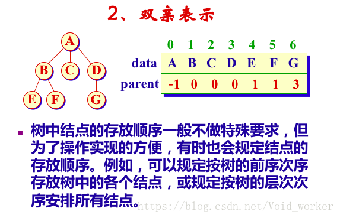

2020-08-15
23
树--知识点整理
树
1.树
1.1 基本概念
1.2 树的性质
非空树中结点总数N = 1 + 分支数
分支数 = 树中各结点的度之和
1.3 树的存储结构
1.4 树的存储表示
2.二叉树
2.1 基本概念
满二叉树：一个二叉树,如果每一个层的结点数都达到最大值,则这个二叉树就是满二叉树。也就是说,如果一个二叉树的层数为K,且结点总数是(2^k) -1 ,则它就是满二叉树。
完全二叉树：若设二叉树的高度为h，除第 h 层外，其它各层 (1～h-1) 的结点数都达到最大个数，第 h 层从右向左连续缺若干结点，这就是完全二叉树。
2.2 二叉树的性质
具有n个结点的完全二叉树的高度（或深度）为 取下整(log2n)+1,也可写为 取上整log2(n+1)
2.3 二叉树的存储结构
2.4 二叉树的存储表示
2.5 二叉树遍历
2.6 构造二叉树
使用二叉树前序遍历建立二叉树
构造二叉树
二叉树计数
2.7 线索化二叉树
线索化二叉树，又称穿线树，将某种遍历顺序下的前驱、后继关系记在树的存储结构中，可以高效地找出某结点的前驱、后继。
3.树与森林
3.1 树的遍历
3.2 森林与二叉树的转换
将一般树化为二叉树表示就是用树的子女-兄弟表示来存储树的结构。森林与二叉树表示的转换可以借助树的二叉树表示来实现。
3.3 森林的遍历
森林的遍历也分为深度优先遍历和广度优先遍历，深度优先遍历又可分为先根次序遍历和后根次序遍历。
4.堆
注：当调整完较高一层的顺序后要看低层的是否符合条件
5.Huffman树
5.1 概述
5.2 Huffman树的合并过程
注意：画Huffman树时要细心，所有结点都要画上
5.3 Huffman树的存储
5.4 最佳判定树
5.5 Huffman编码
用途；实现数据压缩
Comments

回复

回复

回复

回复